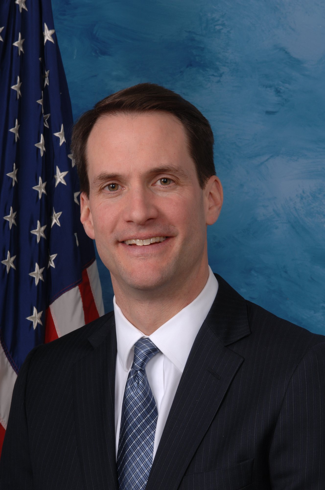
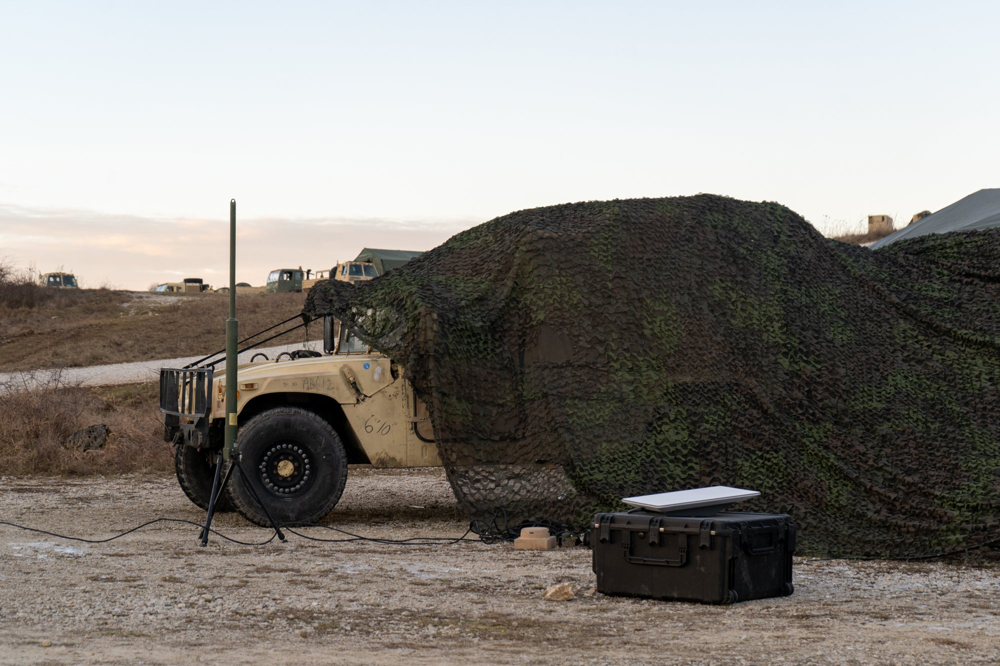

Fino a ieri la disputa su Starshield in Ucraina era una questione di domande senza risposta. Da venerdì 20 novembre ha un prezzo possibile. Il democratico Jim Himes, oggi primo esponente dell'opposizione nella commissione permanente sull'Intelligence della Camera e dal prossimo gennaio suo presidente, ha messo per iscritto che i contratti di sicurezza nazionale di SpaceX potrebbero risentirne, se l'azienda e l'amministrazione Trump non diranno chi ha deciso di rallentare il servizio militare usato da Kiev. È la prima volta che la vicenda passa dalle richieste di chiarimento alla leva dei finanziamenti.
Che cosa chiede Himes
La lettera, datata 20 novembre e indirizzata a Musk come presidente e amministratore delegato di SpaceX, è breve e senza giri di parole. Himes chiede formalmente un incontro con i dirigenti dell'azienda e spiega perché: lo staff della commissione ha domandato più volte un briefing sulle interruzioni di ottobre, senza ricevere «alcuna risposta sostanziale».
Il cuore del testo sono tre domande. «La mia richiesta è semplice», scrive il deputato del Connecticut. «Spiegate quali modifiche sono state fatte al servizio Starshield nell'ottobre 2026, perché sono state fatte e se sono state decise unilateralmente da SpaceX o su indicazione di un funzionario del governo degli Stati Uniti». Himes riconosce che parte del servizio è stata ripristinata, ma vuole di più: una spiegazione tecnica precisa di quali zone dell'Ucraina ricevono oggi Starshield, quali no, e se SpaceX stia prendendo «da sola» quelle che definisce decisioni «di vita o di morte».
Il punto giuridico è dichiarato subito. Starshield, ricorda la lettera, è un servizio acquistato dal governo americano con un contratto fra governo e SpaceX. Il fatto che si appoggi alla costellazione commerciale Starlink «non autorizza in alcun modo SpaceX a modificare unilateralmente il servizio».

La minaccia sui finanziamenti
Poi arriva il passaggio che ha fatto notizia. Himes scrive di aver già detto ad alti funzionari dell'amministrazione che la possibile modifica unilaterale di un contratto pubblico, unita alla mancata collaborazione con il controllo parlamentare, «mette in discussione ogni contratto che il governo degli Stati Uniti ha con SpaceX». Compresi, aggiunge con una punta polemica, i sistemi militari separati che Musk stesso descrive come «posseduti e controllati dal governo». Per questo, conclude, gli è «difficile continuare a sostenere l'autorizzazione dei finanziamenti» per questi sistemi sviluppati da SpaceX finché non avrà risposte soddisfacenti.
Lo stesso messaggio è partito in forma classificata verso Jay Clayton, il direttore dell'intelligence nazionale. CNN, che per prima ha rivelato le due comunicazioni, ne ha ottenuto un estratto: «In parole semplici, la nostra commissione non può autorizzare fondi per lo sviluppo di sistemi governativi che il governo non controllerà pienamente». Himes chiede a Clayton aiuto per ottenere trasparenza, così da poter tornare ad approvare con fiducia sistemi che hanno SpaceX come fornitore principale.
Gli strumenti non mancano. Il più diretto è il cosiddetto ring fencing: nella legge annuale che autorizza le spese dell'intelligence la commissione può bloccare i fondi di singoli programmi finché non sono soddisfatte certe condizioni. Himes potrebbe anche lavorare con le commissioni Bilancio per spostare o fermare stanziamenti destinati a sistemi SpaceX. Il peso politico della minaccia dipende dal calendario: dopo le elezioni di metà mandato, a gennaio i democratici avranno la maggioranza sia alla Camera sia al Senato.

Che cosa c'è in gioco per SpaceX
SpaceX non è un fornitore qualunque del Pentagono. Oltre ai lanci militari, l'azienda costruisce satelliti per il National Reconnaissance Office, l'agenzia dei satelliti spia, e quest'anno la Space Force le ha assegnato un contratto da 2,29 miliardi di dollari per la Space Data Network Backbone, la rete di trasmissione dati che deve sostenere lo scudo antimissile Golden Dome. Sono proprio questi i sistemi «di proprietà del governo» a cui Himes fa riferimento.
Detto questo, un taglio netto resta improbabile. SpaceX offre oggi capacità che nessun'altra azienda americana è in grado di fornire, e un blocco dei fondi rischierebbe di colpire prima di tutto le forze armate che su quei sistemi contano. La partita, più che sul divorzio, sembra giocarsi sul controllo: i democratici vogliono limitare la possibilità che un'azienda privata, e il suo proprietario, influenzino l'andamento di un conflitto. Non è nemmeno chiaro se Himes avrebbe i voti per imporre condizioni.
La domanda senza risposta: chi ha deciso
Il nodo resta lo stesso da metà ottobre, quando i terminali usati dalle forze ucraine hanno cominciato a perdere il collegamento sopra i 160 km/h circa, frenando soprattutto i droni intercettori. Le versioni ufficiali si contraddicono. Musk ha scritto in ottobre che i sistemi Starshield «sono posseduti e controllati dal governo degli Stati Uniti» e che ogni limite di velocità o di uso è deciso dai militari «e in ultima istanza dal presidente». Il 17 ottobre il segretario di Stato Marco Rubio ha negato che qualcuno alla Casa Bianca abbia dato quell'ordine: «È successo e basta, ma per quanto ne so è stato ripristinato». Trump ha detto: «Non sono stato io, e non credo sia stato Elon».
CNN aggiunge ora un elemento nuovo: in privato, dirigenti di SpaceX e funzionari della Difesa avrebbero detto ad alcuni parlamentari che la decisione iniziale di ottobre veniva dalla Casa Bianca. È un'indicazione di una fonte anonima, non confermata, e Trump continua a negare un coinvolgimento diretto. Interpellata da Newsweek, la Casa Bianca ha rimandato alle parole già pronunciate dal presidente; il Pentagono ha girato le domande all'Aeronautica.
Musk, dal canto suo, ha ribadito la propria linea mercoledì 18 novembre al DealBook Summit di New York, come abbiamo raccontato: Starlink è un servizio civile e non deve essere usato per attacchi, per quello esiste Starshield, dove decide il Dipartimento della Guerra. Su Zelensky, che sostiene di usare Starshield e di averlo visto rallentare, è stato netto: «Sta mentendo». Alla lettera di Himes, fino a stamattina, né Musk né SpaceX hanno risposto pubblicamente.
Kiev aspetta, Washington si prepara
Intanto le nuove limitazioni sopra i territori occupati, denunciate da Zelensky dal 12 novembre, sono in vigore da oltre una settimana. Denys Sienik, che guida l'ambasciata ucraina a Washington, ha detto venerdì a CNN che Kiev è in contatto con il Pentagono ma non ha avuto alcuna risposta da SpaceX.
Himes non è solo. Le senatrici e i senatori democratici della commissione Esteri del Senato preparano un'indagine propria per quando avranno la maggioranza, e Jeanne Shaheen e Chris Coons hanno chiesto a Musk di conservare tutti i documenti dal 1° settembre, con risposta entro il 30 novembre. Anche fra i repubblicani c'è chi ha chiesto un'indagine, come il deputato dell'Ohio Mike Turner. Nove senatori dei due partiti avevano invece chiesto un'inchiesta all'ispettore generale del Pentagono, che secondo CNN ha declinato e rimandato i parlamentari alle singole forze armate.
Che cosa seguire adesso
Le prossime tappe sono tre: se SpaceX accetterà l'incontro chiesto da Himes, che cosa arriverà a Shaheen e Coons entro il 30 novembre e, da gennaio, se la nuova maggioranza userà davvero la legge sull'intelligence per mettere condizioni ai programmi SpaceX. Nel frattempo resta aperta la questione che sta sotto tutto il resto: chi ha l'ultima parola su una rete militare che il governo paga ma che un'azienda privata costruisce e gestisce.
Il dossier sui detriti di Flight 15 arrivati sulle spiagge del Messico passa all'archivio Notizie.
Fonti pubbliche e tracce
Ultimo aggiornamento editoriale: 21 novembre 2026. Nel corpo non si ripete la fonte a ogni frase: le tracce sono raccolte qui. Le citazioni sono traduzioni redazionali dall'inglese.
- Commissione Intelligence della Camera USA (minoranza), 20 novembre 2026: testo integrale della lettera di Jim Himes a Elon Musk.
- CNN (via KESQ), 20 novembre 2026: comunicazione classificata a Jay Clayton, ring fencing, ricostruzione sulla Casa Bianca, dichiarazioni di Denys Sienik, ispettore generale del Pentagono.
- Ars Technica, 20 novembre 2026: contratto Space Data Network Backbone da 2,29 miliardi, satelliti per l'NRO, impatto sul business militare di SpaceX.
- Newsweek, 20 novembre 2026: post di Musk di ottobre, dichiarazioni di Rubio e Trump, risposte di Casa Bianca e Pentagono, posizioni di Turner e Cramer, lettera Shaheen e Coons.
- Quartz, 20 novembre 2026: sintesi delle due comunicazioni di Himes.
- Kyiv Independent, 21 novembre 2026: reazione ucraina e contesto parlamentare.
- Post su X del 19 novembre 2026 con il video delle dichiarazioni di Musk al DealBook Summit su Zelensky e Starshield.
- Rivoluzione Spaziale, 19 novembre 2026: l'intervista di Musk al DealBook Summit.
- Rivoluzione Spaziale, 15 novembre 2026: il ritorno dei limiti sopra i territori occupati.
- Rivoluzione Spaziale, 15 ottobre 2026: il primo episodio e la differenza fra Starlink e Starshield.
Fotografie utilizzabili
- Copertina e figure: Wikimedia Commons, pubblico dominio (governo USA: Air Force, Esercito, Congresso); dettagli in
assets_starshield_himes/crediti_immagini.md. - Non esistono immagini libere della lettera o dei limiti in sé: la copertina e una figura mostrano terminali Starshield in uso militare, l'altra il ritratto ufficiale di Himes. Nessuna foto SpaceX o X a credito editoriale in questo dossier.